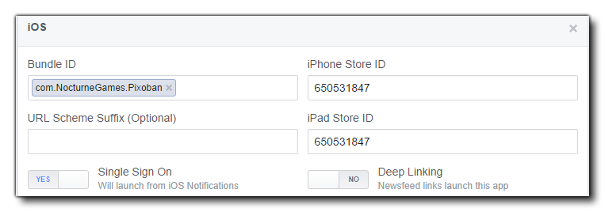

Die aktuelle Grafik-API, die unterstützt wird, ist Graph API v2.0 auf allen Plattformen.
HINWEIS: Wenn auf Ihrem Testgerät die Facebook App installiert ist, funktionieren diese Funktionen nur beim Erstellen einer ausführbaren Datei, da das Testen des Spiels (mit den grünen oder orangefarbenen "Wiedergabe" -Schaltflächen) nicht korrekt funktioniert. Grundsätzlich kommunizieren der Test Runner und die FaceBook App miteinander, so dass der Kommunikationsmechanismus korrekt eingerichtet werden muss und nur über die Schaltfläche "Anwendung erstellen" korrekt eingerichtet wird.
Wenn Sie Ihre Facebook-Seite so einrichten, dass sie eine Android App akzeptiert, müssen Sie den Namen des Android Pakets angeben (umgekehrtes URL-Format und sollte Ihrer Game-Bundle-ID entsprechen), und Sie können den Klassennamen auf <package_name>.RunnerActivity festlegen. GameMaker Studio 2 unterstützt auch Single Sign-On für Android Apps. Sie können dies aktivieren, damit das Spiel über die Android Facebook App-Benachrichtigungen gestartet werden kann. Deep Linking muss nicht aktiviert werden, da es nicht von GameMaker unterstützt wird.
Es gibt auch einen Abschnitt, in dem Sie den Android Keystore Hash eingeben müssen, der für den Keystore, den Sie für Ihr Spiel verwenden, einzigartig ist. Da dies ziemlich schwierig sein kann, kann GameMaker Studio 2 es für Sie über die Android Einstellungen erstellen und Sie können es dann einfach kopieren und in den erforderlichen Teil der Facebook-Einrichtungsseite einfügen.
Das Bild unten zeigt, wie dein endgültiger Facebook Android Abschnitt aussehen sollte:
Das Basis-Setup für iOS-Apps mit den Facebook-Funktionen ist das gleiche wie für Android. Es gibt jedoch einige wichtige Dinge, die auf der Facebook-Entwickler-Seite für Ihre App richtig eingerichtet werden müssen:
- Bundle ID: Muss mit der Bundle ID Ihres Spiels übereinstimmen (normalerweise in der Form "com. {Yourcompany}. {Yourgame}").
- iPhone App Store ID: Dies ist die Apple ID, die mit Ihrem Spiel verknüpft ist, wie es bei iTunes Connect für das iPhone-Spiel zu finden ist.
- iPad App Store ID: Wie oben, außer für iPad.
- Facebook-Anmeldung: GameMaker Studio 2 unterstützt Single Sign-On für iOS-Apps. Sie können dies aktivieren, damit das Spiel über die iOS-Facebook-App gestartet werden kann.
- Deep Linking: Dies wird nicht unterstützt, also deaktiviert bleiben.
- URL-Schema-Suffix: Dies wird nicht unterstützt. Lassen Sie das Feld leer.
 Beachten Sie auch, dass die iOS Facebook SDK-Version 3.16.1 lautet. Dies bedeutet, dass das Mindest iOS-Ziel die Version v5.0 und höher ist.
Das HTML5-Ziel funktioniert fast genau wie alle vorherigen Zielmodule. Sie können die Funktionen jedoch nicht lokal testen, dh Sie müssen kompilieren und zum Testen auf Ihren Server hochladen. Es gibt auch eine zusätzliche Funktion, die hinzugefügt wurde, um die HTML-Angebote für HTML5-Spiele zu erstellen, die für andere Plattformen nicht verfügbar sind:

Die folgenden Funktionen dienen zur Integration Ihres Spiels mit Facebook:
facebook_init() -Funktion aufgerufen haben, bevor eine dieser Funktionen korrekt verwendet werden kann. Bei der Arbeit mit Facebook sind einige Dinge zu beachten, die nachfolgend aufgeführt sind:
- Die Login-Funktion wird nur einmal bei einer Veröffentlichungsaktion über GameMaker Studio 2 aufgerufen. Wenn Sie sich also einmal anmelden und versuchen, die Schaltfläche erneut zu testen, gibt es kein sichtbares Ergebnis.
- Wenn Sie die Facebook-App auf Ihrem Android-Gerät installiert haben, wird die Login-Funktion von einer kompilierten App aus überhaupt nicht aufgerufen. Ihre App meldet sich automatisch bei demselben Facebook-Konto an, das Sie mit Ihrer Facebook-App verknüpft haben.
- Wenn Sie beabsichtigen, Ihr Spiel auf Facebook zu veröffentlichen, müssen Sie die Erlaubnis von Facebook selbst einholen. Um dies zu erleichtern, sollten Sie mindestens einen Testbenutzeraccount erstellen, den Sie bereits getestet haben, so dass Facebook ihn verwenden kann, um die Berechtigung zu vereinfachen.
- Wenn Sie die Erlaubnis von Facebook für Ihre App anfordern, ist es eine gute Idee, Facebook mitzuteilen, dass Ihre App dies tut (in den Genehmigungsanfragen), damit sie wissen, wonach sie suchen müssen. Fügen Sie Screenshots Ihrer Befehlskonsole hinzu, die eine erfolgreiche Anmeldung, den Anmeldebildschirm auf Ihrem Gerät und den erfolgreichen Pinnwand-Eintrag auf Ihrem Facebook-Testkonto enthalten.
- Wenn Sie einen Testbenutzer verwenden, einschließlich Screenshots von der Pinnwand des Testbenutzers und einen Facebook-Test verwenden, verwenden Sie denselben Testbenutzer.
- Der gesamte Text, den Sie veröffentlichen möchten, muss sich im unteren Banner Ihres Posts befinden. Jeder Text, der bereits ausgefüllt ist (auch wenn er vom Benutzer bearbeitet werden kann), ist nicht zulässig. Das bedeutet, dass Ihre Pinnwand-Beiträge Dialog-Beiträge sein müssen, die dem Benutzer erlauben, zu schreiben, was sie wollen.
- Sie benötigen Ihren Paketnamen und Klassennamen, um Ihre Berechtigungen über Facebook zu bestätigen. Ihr Paketname wird in Ihren Spieleinstellungen aufgelistet, und der Klassenname ist Ihr Paketname + ".RunnerActivity", zum Beispiel: " com.macsweeneygames.catchthehaggis.RunnerActivity ")
- Wenn Ihr Spiel im Facebook-Dashboard auf "Sandbox" -Modus eingestellt wurde, müssen alle Nutzer, die Ihr Spiel spielen möchten, zur Liste der Testbenutzer auf Facebook hinzugefügt worden sein.